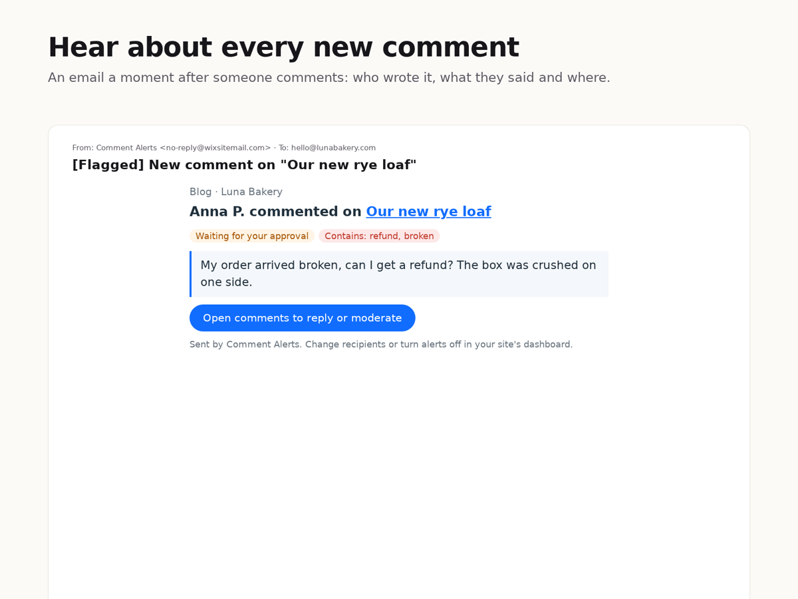

Comment Alerts
Get an email the moment someone comments on your blog or pages, with the comment and a link to reply.
- An email for every new comment: who wrote it, what they said and on which post
- See at a glance which comments wait for your approval
- Send alerts to up to 5 people on your team
- Flag comments that mention words like refund or broken
- History of recent comments and a test email button

What it does
Comments are where readers ask questions and customers raise problems, but they are easy to miss when nobody checks the dashboard. Comment Alerts sends you an email shortly after each new comment on your blog posts or on any page with comments. The email shows the commenter's name, the full comment, the post it was left on, and whether it is waiting for your approval, with a button that takes you straight to the comments page to reply or moderate.
Choose who gets the alerts and whether replies between commenters should count. Add words you care about, such as refund, broken or a product name, and those comments arrive with [Flagged] in the subject line, or turn on keyword-only mode to hear only about them. The app keeps a short history of recent comments and what it did with each, and a test button lets you check delivery before the next comment comes in.
The free plan covers 50 alerts a month to one address. Premium removes the monthly limit, adds up to 5 recipients and the keyword filter. Settings and history stay in your site's own database, and emails go out through your site's email service.
Price
Free
- 50 email alerts per month
- 1 recipient
- Replies on or off, history, test email
- Approval status and link to reply
Premium
$5/month, $4/month billed yearly. For busy blogs and teams
- Unlimited alerts (site email allowance applies)
- Up to 5 recipients
- Keyword filter and keyword-only mode
- Everything in the free plan